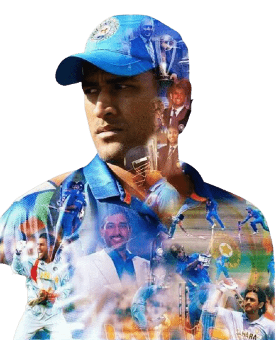

Ms Dhoni
Barring Sachin Tendulkar and Virat Kohli, MS Dhoni is probably the most popular and definitely the most scrutinised cricketer from India. He has got to this point coming from the cricketing backwaters, the mining state of Jharkhand, and through a home-made batting and wicketkeeping technique, and a style of captaincy that scales the highs and lows of both conservatism and unorthodoxy. Under Dhoni's captaincy, India have won the top prize in all formats: topping the Test rankings for 18 months starting December 2009, the 50-over World Cup in 2011 and the World T20 on his captaincy debut in 2007.